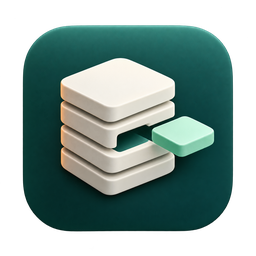

ElevenCleanDeveloper storage, under your control
Your files stay on your computer.
Privacy policy · Revised October 17, 2026 · macOS app, including the 1.2.0 update candidate
What the app processes
ElevenClean reads file and folder metadata in locations available to the sandboxed app, including locations you select through macOS. Metadata includes paths, names, sizes and timestamps. Optional duplicate review reads file contents to compare cryptographic hashes. These scans run locally; NextEleven does not receive your files, filenames, scan results or hashes.
Local preferences and receipts
The app saves its preferences, your user-selected security-scoped folder bookmark, custom protected-folder paths, last-scan/cleanup information and the latest cleanup receipt in its local app data. A receipt can include original and Trash paths, outcomes, dates and same-volume storage measurements. This data is not sent to NextEleven. The app does not separately encrypt these local preferences; protect your computer and any backups.
In Settings you can reset the saved folder grant, remove individual protected-folder records, and clear the latest cleanup receipt and its storage comparison. Clearing a receipt does not restore files or empty Trash. Other preferences remain until changed or the app's local data is removed. Device and Time Machine backups may retain copies according to your system settings.
No account, advertising or tracking
No account, advertising SDK, third-party analytics SDK, developer-operated crash-reporting service or tracking mechanism is included. NextEleven does not collect data from the app. Apple may separately process App Store downloads and diagnostics according to your Apple settings and its policies.
Files you choose to remove
Cleanup uses the system's recoverable Trash operation. The app does not empty Trash. Finder and macOS manage Trash retention and restoration. If you empty Trash yourself or remove a backup, recovery may no longer be possible. Optional Docker usage preview invokes your installed Docker command-line tool; Docker and its configured connection have their own operation and privacy practices. ElevenClean does not send scanned file contents to Docker.
Support and this website
If you email support, we receive the information you choose to provide so we can answer. Do not send signing keys, passwords, project secrets or private file contents. Redact personal paths from screenshots. Our website hosting provider processes ordinary request metadata when you visit these pages; this website activity is separate from local app scanning. Contact nextelevenstudios@gmail.com for questions or to request deletion of support correspondence.
Changes
We update this page when app data practices change and show the revision date above.